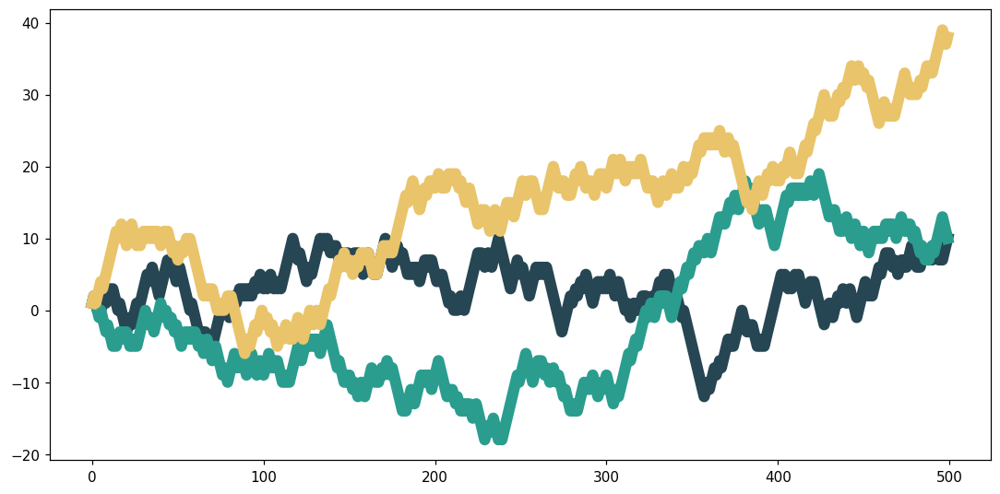

Parsing matplotlib's SVG
Transforming a static plot into something interactive can't be done (unfortunately) just by saying "make this interactive."
But that doesn't mean we have to do mystic things to make it work, because yes, that's perfectly possible without weird hacking stuff.
Overview
There are two ways to tackle this problem:
- Take a matplotlib Figure (an instance containing all plot elements) and convert it to a more common format such as JSON. We call this serialization. Then, with this JSON file, we recreate the figure with an interactive tool such as D3.js (that's what mpld3 does, by the way!).
- Use the native matplotlib figure output format (especially SVG) and parse this instead (that's what
plotjsdoes).
The second option is much simpler (well, it depends), because we don't have to:
- translate the figure to JSON (which can be painfully complex if you want to handle all edge cases and make it robust),
- recreate the chart (browsers can display SVG perfectly).
But it means we don't have full control over how the plot is structured (from the browser's point of view). We need to find a way to parse this SVG.
Parsing SVG
For the moment, we just take the user's matplotlib figure and save it as SVG. This is just:
Now, let's say the figure contains a scatter plot and we want to add a tooltip: when someone hovers their mouse over a point, it displays a label.
The core problem to solve is: "how do I know what elements from the SVG are points?"
If we're able to find a solution to this, then we're able to do pretty much anything we want.
The thing is, there's nothing in the SVG output file that tells us "this element is a point from the scatter plot." Even worse, we don't even know if it's a scatter plot or something completely unrelated, like a choropleth map.
For example, here is a polygon of a choropleth map:
<path d="M -5.94098 449.279178
L -4.961244 447.127034
L -4.623284 444.786333
L -3.951831 442.584471
L -5.459995 439.551953
L -5.763812 436.050818
L -3.764043 431.650797
L -2.459548 432.213824
L 0.368893 433.425033
L 4.436122 437.74466
L 5.072043 439.840475
L 2.799722 444.523728
L 1.620088 448.292228
L 0.147953 450.236113
L -1.691322 450.601856
L -2.215184 449.161231
L -3.074426 448.947286
L -4.263489 450.334887
z
" clip-path="url(#pf43ab1627f)" style="fill: #424186"/>
Here is a point from a scatter plot:
Here is a line from a line chart:
<g id="line2d_19">
<path d="M 73.832727 295.488
L 154.996364 235.008
L 236.16 174.528
L 317.323636 114.048
L 398.487273 53.568
"
clip-path="url(#pd511a61f39)"
style="fill: none;
stroke: #1f77b4;
stroke-width: 1.5;
stroke-linecap: square" />
</g>
If you pay close attention, you'll see potential patterns in the structure of certain elements.
That's exactly what we'll use to determine what kind of plot elements we have.
Note: determining the kind of plot elements could have been done (partially) from the Python side, but this felt easier to me to do from the JavaScript side.
The next step is to understand matplotlib's underlying objects (called artists) and how that translates to SVG.
TL;DR: Artists in matplotlib
In matplotlib, artists are all the visual elements you see on a plot. There is the Artist base class, and all other artists inherit from this class.
For example:
- the
scatter()function returns aPathCollectionobject, a subclass ofArtist, - the
plot()function returns aLine2Dobject, a subclass ofArtist, - and so on.
Selecting artists from SVG
In the SVG output of savefig("plot.svg"), we can find some info about what object was used.
For example, all PathCollection objects look like <g id="PathCollection_1">, <g id="PathCollection_2">. And since PathCollection is just one or multiple points, we can easily know how many scatter plots there are.
For lines, they are represented by Line2D. In the SVG, they look like <g id="line2d_1">, <g id="line2d_2">, etc. With this, we can easily detect that there are lines in the chart.
But there's a major issue here: not all PathCollection elements are relevant, same for Line2D, and so on.
By "relevant," I mean those we want to add interactivity to. For example, what elements here are considered to be a Line2D?

At first, I thought there were three: one for each main line. But in practice, it's much more:

What that means is that we can't just select all Line2D elements and give them a hover effect, for instance. We need to find a way to discriminate relevant lines (the three big ones) from the other ones.
Filtering artists from SVG
This section might not be up to date with the latest version, but it'll give you an idea of how plotjs detects what is a "core" plot element and what is not.
It mostly consists of handling edge cases here, and is very different depending on the plot element (Line2D, PathCollection, etc.).
For example, in order to select only "core" Line2D elements (the three colored ones in the previous image), we do:
const lines = svg.selectAll('g[id^="line2d"] path').filter(function () {
const clip = d3.select(this).attr("clip-path");
return (
// keep only <path> with clip-path attribute
clip &&
// that starts with "url("
clip.startsWith("url(") &&
// and are not child of a #matplotlib.axis
!this.closest('g[id^="matplotlib.axis"]')
);
});
The idea is basically:
- select all
Line2Delements with the first line, - filter to remove non-wanted
Line2Delements.
This gives us a lines variable that only contains the lines of interest!
The logic is the same for other plot elements: bars, points, polygons, etc.
You can find the reference page of the parser here